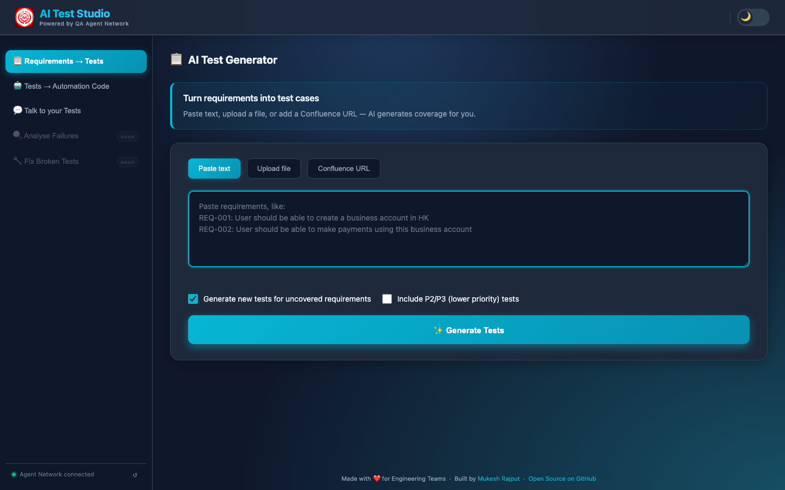
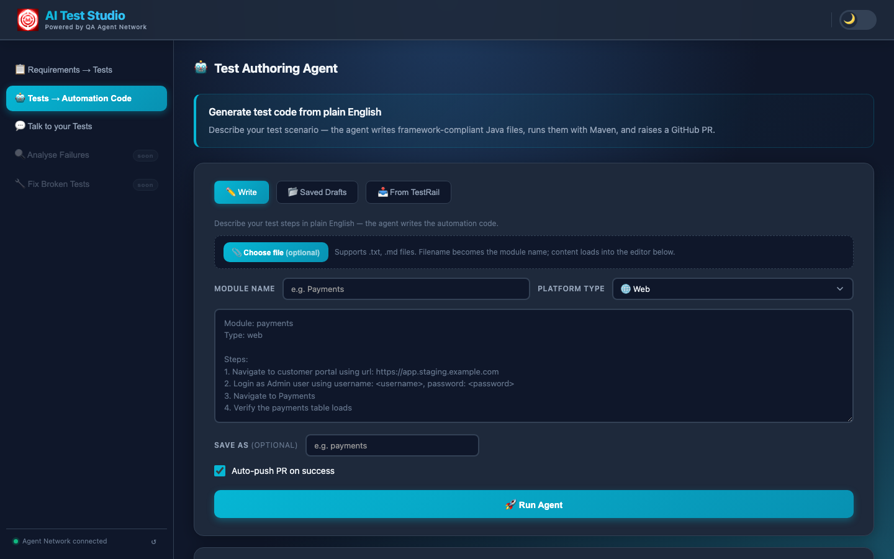
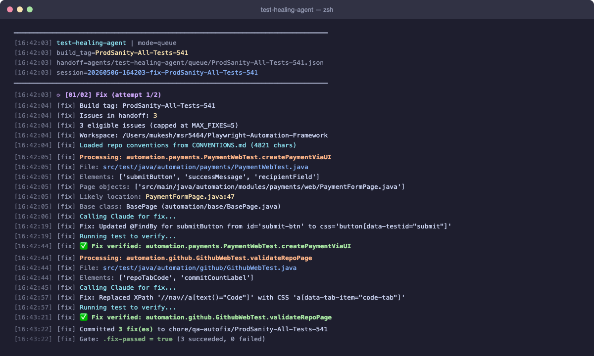

Three repositories, three AI agents, one continuous loop — generating tests from requirements, writing automation code from plain English, classifying CI failures, and fixing broken locators autonomously. Engineers review a PR at the end. They don't do all the work in the middle anymore.
The System at a Glance
Three repos, each with a distinct responsibility. AI Test Studio is the browser interface engineers open. It proxies agent requests to QA Agent Network — the AI backbone running three independent Claude-powered agents. Both read from and write to Jarvis, the Java/Maven automation framework where all generated test code lives.
Repo 01
AI Test Studio
Python · Flask
Web UI · orchestration hub · RAG engine · TestRail & Confluence sync · admin knowledge base · port 5001
Repo 02
QA Agent Network
Python · Claude CLI
3 AI agents · HTTP server · Playwright MCP · SSE streaming to browser · port 8765
Repo 03
Jarvis
Java · Maven
Automation framework · target repo where agents write code · Playwright · REST-Assured · Appium · TestNG
AI Test Studio
Python · Flask · port 5001
Test Generation → TestRail
RAG Chat → ChromaDB
Admin Hub · Knowledge Base
QA Agent Network
Python · Claude CLI · port 8765
Test Authoring Agent
Test Triaging Agent
Test Healing Agent
Jarvis
Java · Maven · TestNG
Playwright — UI tests
REST-Assured — API tests
Appium — Mobile tests
Five Features. One Closed Loop.
Each feature is a standalone workflow. Together, the output of one stage feeds the next — closing the loop from requirements all the way to verified, self-healing automation.

01 · Test Generation
Requirements → TestRail-Ready Test Cases
Paste requirements or drop a Confluence URL. The AI cross-references your existing TestRail coverage and generates structured test cases only for uncovered gaps — positive, negative, and edge cases, with one-click push to TestRail.
Under 60 seconds

02 · Test Authoring Agent
Plain English → GitHub PR
Describe what to automate. The agent parses the intent, navigates the real staging environment via Playwright MCP to confirm selectors, generates compilable Java code, runs Maven to verify it, and raises a PR. Five steps. No human in the loop until review.
Under 10 minutes

03 · Test Triaging Agent
AI Classifies Every CI Failure Automatically
After every build, the agent scouts MySQL for unanalysed failures, classifies each one as PRODUCT BUG or AUTOMATION ISSUE using Claude Opus, then runs an adversarial review with Claude Sonnet to catch misclassifications before the report ships to Slack.
~73% accuracy · first pass

04 · Test Healing Agent
Broken Locators Fixed, Verified, and PR'd
Picks up HIGH-confidence ELEMENT_NOT_FOUND failures from the triaging agent, rewrites the broken page object with a corrected locator, re-runs the test via Maven to verify the fix, and raises a PR. Engineers review a diff, not a debugging session.
Up to 5 fixes per cycle

05 · Talk to Tests
Ask Any Question About Your Test Coverage
A natural-language chat interface over the entire QA knowledge base — test plans, specs, runbooks, and live TestRail data all embedded in ChromaDB. Answers are grounded in your actual documentation, not generic AI knowledge.
Instant · no manual search
The Closed Loop
CI runs → failures to MySQL → Triaging Agent classifies → Healing Agent fixes Automation Issues → PR raised → engineer merges → next CI run passes
Real Numbers From Production
< 60s
Requirements → TestRail-ready test cases
< 10 min
Plain English → reviewed GitHub PR
~73%
CI failure classification accuracy (first pass)
15–20
Flaky tests detected per build (typical)
Up to 5
Broken locators auto-fixed and verified per cycle
2–3 days
Saved per automation task vs. manual authoring
The Key Design Insight: CLAUDE.md
Every AI agent reads one file before doing anything: Jarvis/CLAUDE.md — a plain-text conventions file defining every naming rule, class pattern, and DO/DON'T for the Java framework.
Why this matters
Change the framework → update CLAUDE.md → every agent adapts on the next run. No prompt engineering buried in Python scripts. The conventions live in the repo, version-controlled and reviewable alongside the code itself.
What We Learned Building This
📄
CLAUDE.md beats any prompt
A well-maintained conventions file in the target repo is what keeps all agent output aligned with your codebase. Invest here before you invest anywhere else in prompt engineering.
⚔️
Adversarial review matters at scale
A single model classifying 50 CI failures will make confident mistakes. Running a second model as an independent reviewer with structured debate rounds catches those mistakes before they reach the report.
🔔
Fail noisily, not silently
When the healing agent can't fix a test, it still raises a PR with a NEEDS-REVIEW verdict — full context of what failed, what Claude tried, and why. Engineers fix it in minutes instead of starting blind.
🎭
Playwright MCP is underrated
Confirming selectors against the real staging environment before generating code eliminates an entire class of first-run failures. The extra 2–3 minutes upfront saves 10+ minutes of debugging downstream.
Tech Stack
AI / Models
Claude Opus 4.6
Claude Sonnet 4.6
OpenAI
Gemini
Ollama
RAG / Vector
ChromaDB
LangChain
Browser
Playwright MCP
Playwright Java
Test Layer
REST-Assured
Appium
BrowserStack
Maven
TestNG
Infrastructure
Flask 3.0
Server-Sent Events
MySQL
GitHub CLI
Slack Bot API
Explore each feature in depth
All three repos are open source. Each feature has a full deep-dive page covering the implementation, pipeline steps, screenshots, and design decisions.
#QAAutomation
#AIAgents
#TestAutomation
#Claude
#Anthropic
#PlaywrightMCP
#RAG
#OpenSource
#DevOps